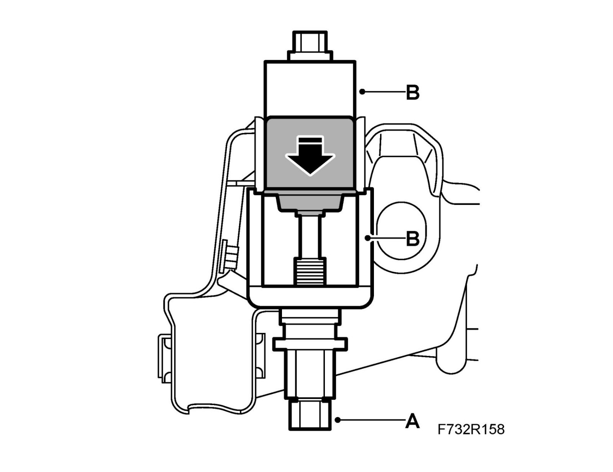
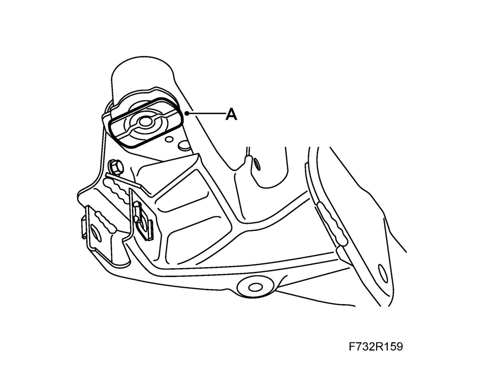
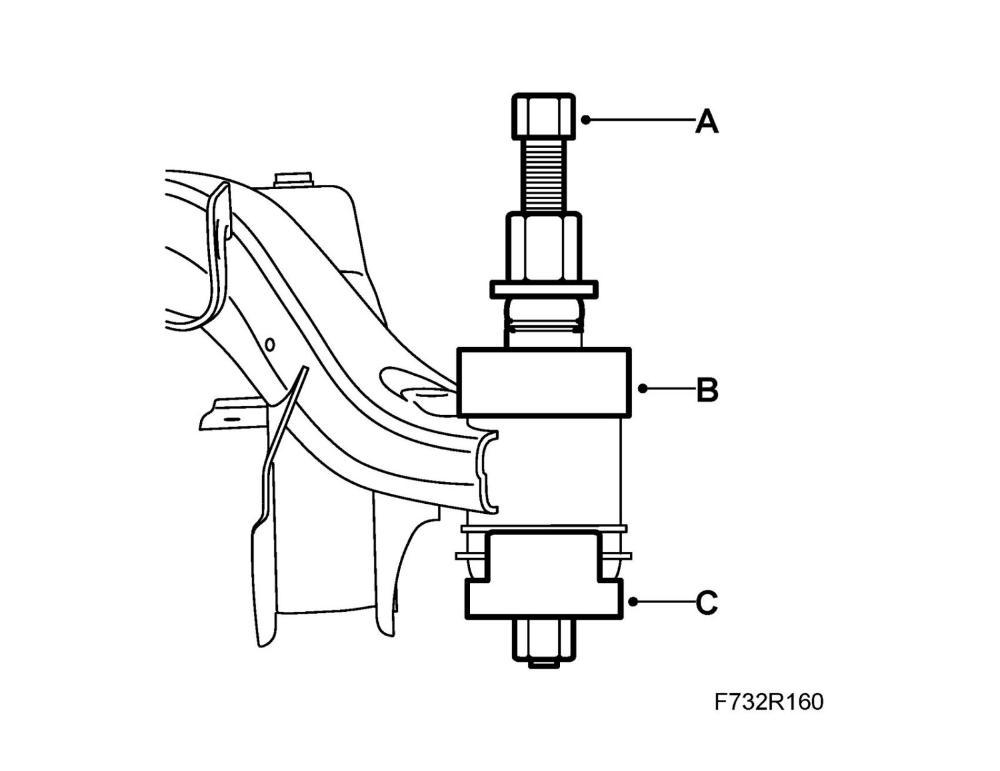

Rear Subframe Mount: Service and Repair
Rear subframe bush, replacementTo remove
1. Remove the subframe, see Subframe, 4WD or Subframe.
2. Press out the bush using the pull rod (A) from 89 96 779 Set of press sleeves, front assembly (or a hydraulic press) and 89 96 928 Removal tool, rear subframe bushes (B).

To fit
1. Fit the bush with washer (A) in the longitudinal direction of the car.

2. Press out the bush using the pull rod (A) from 89 96 779 Set of press sleeves, front assembly (or a hydraulic press), 89 96 910 Fitting tool, rear subframe bushes (B), and CH-49233 Press tool (C).

3. Fit the subframe. See Subframe, 4WD or Subframe.